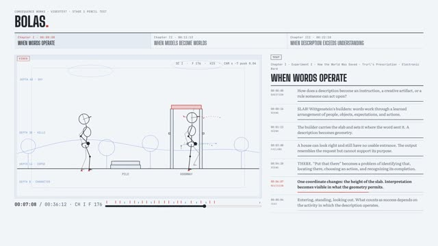
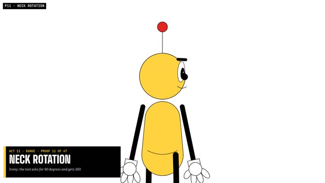
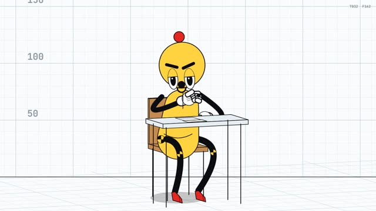
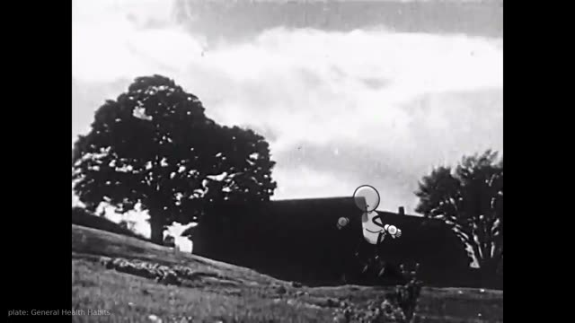

Bolas · department of dramaturgical crash testing
Crash Lab
A sequence of experiments in authored motion: from a pencil test of ball-and-cord figures, through a measured crash-test bay, into archive footage, a hand-made CINEOSIS film, seven episodes of The Found Odyssey and the WYGWYL cel layer. Every interactive page computes its figures in the browser; every film is rendered from the same rigs.
Latest · WYGWYL · poem 07
- 01
Bolas Pencil Test
The three experiments of From Imagetext to Worldtext acted out by ball-and-cord figures, the text beside the action, beat by beat, with a skeletal gate and an X-sheet.

- 02
Bolas Range Test
54 motions that push one skeleton to the end of every joint's range, scored like a fitness assessment; Video → Bolas turns a clip of any person into the same skeleton and the same report.
- 03
The Physical
Bola reports for a physical: 47 cartoon proofs in six acts that one skeleton can walk, reach, lift, slip, sulk and swoon, with the joints each proof drives audited underneath.

- 04
Dramaturgy Crash Lab
132 vignettes for three dummies in a measured bay, each a small drama and a crash test of weight, feet, hands and contact, then CINEOSIS: the 45 signs of Deleuze's cinema books over 59 measured worlds.

- 05
CINEOSIS Hybrid Atlas
The dummies put into the real archive clip for each sign: a six-sign pilot fitted by hand, then 84 passages across all 45 signs from an automatic pipeline.

- 06
CINEOSIS Hand Butter
Every sign authored by hand over unaltered archive clips and reviewed blind; Hand Butter is the making-of, performed by the film's own cast.

- 07
The Found Odyssey
Seven episodes, one book of the Odyssey each: Homer asked by the CALL track, answered by archive speech, acted by drawn figures in archive plates; plus the drawn tests and the style lab.

- 08
WYGWYL
The poet as a jointed paper puppet from his own photographs, over the cineosis-lab cel cuts, with her reading; poem 07 complete.

- —
Documents and prompts
The prompts, production notes, validation records and independent reviews behind every section.
CONSEQUENCE WORKS · Watson Hartsoe · built with Claude. The films are rendered from code; the archive footage is the cineosis-lab library's, credited inside each film.